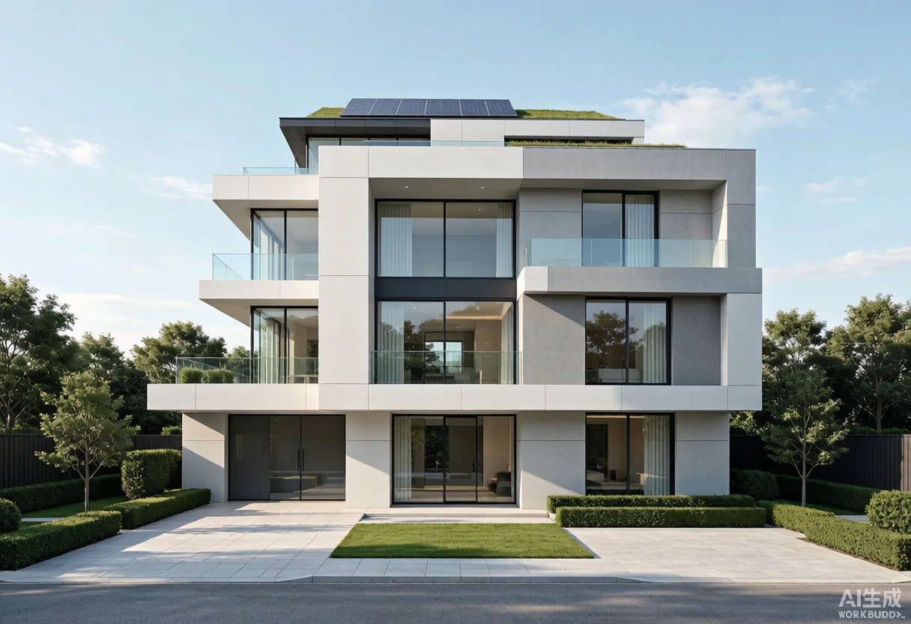

AI Core
AI 智能中枢
选择家庭场景，查看 AI 对当前情境的识别、判断与自动执行方案。
当前场景
Decision & Action
AI 判断与执行
当前识别
当前识别40岁成人大成，位于一层客厅，正在接客
AI 判断
AI 判断环境照度适宜，用户行动能力正常，需舒适与便捷响应。
行为方案会客 · 温馨氛围与迎宾
- 客厅主灯 · 温馨 70%理由：营造会客氛围。
- 门锁 · 访客通行授权理由：便于客人进入。
- 背景音乐 · 轻柔播放理由：提升待客体验。
- 客厅空调 · 维持 24℃理由：舒适体感。
能源方案绿电优先 · 储能吸纳 + 错峰高耗
- 家庭储能柜 · 优先充电理由：余电先入储能，提升自发自用率。
- 高耗能设备 · 排至光伏强时运行理由：提高绿电消纳。
- 能源模式 · 自发自用优先理由：减少市电取电。
System
系统状态
当前能源、安全、舒适度与在家人数等全局指标一览。
家庭模式居家
在家人数0人
AI中枢运行中
全屋安全正常
综合舒适度优
总用电0.0kW
光伏发电0.0kW
家庭储能0%
市电售 0.5kW
Overview
家庭中枢总览
家庭成员、别墅空间状态、环境能源安全与近期记录一屏掌握。
家庭成员状态
张爷爷老人
祖父 · 72岁
休息主卧休息
李奶奶轮椅
祖母 · 70岁
活动中家庭起居区行走
小宇儿童
孙子 · 8岁
活动中书房学习
大成成人
父亲 · 40岁
活动中客厅接客
小美病患
母亲 · 36岁
休息多功能空间休息
三层别墅空间状态
一层 · 平面示意2 人活动 · 6 间
环境 · 能源 · 安全
环境
平均温度 24℃平均湿度 54%CO₂ 620ppmPM2.5 18
能源
光伏 4.2kW负载 3.1kW储能 68%自发自用 78%
安全
风险 正常
近期记录
- 14:32AI中枢
识别小宇进入书房并启动儿童学习模式
- 14:20AI中枢
李奶奶于家庭起居区活动，已开启通畅照明
- 14:05爸爸
启动会客模式，客厅调至温馨 70%
- 13:50AI中枢
多功能空间切换为病患休养模式
- 13:30系统
储能达 68%，光伏发电充足